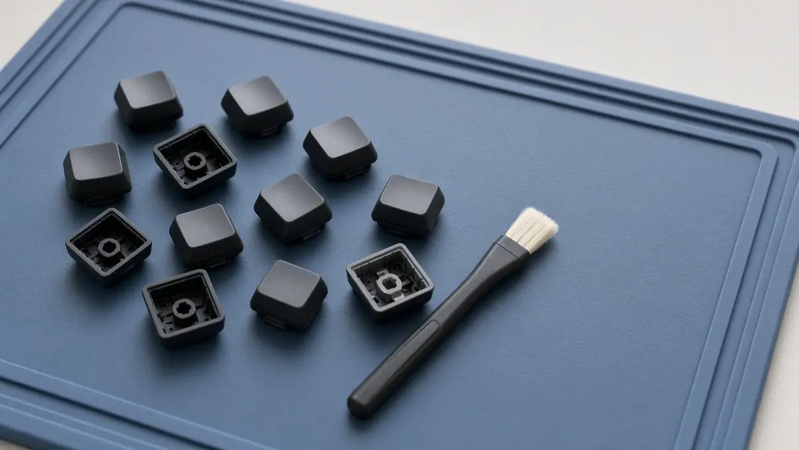

One key needs a hard press. Another types twice. A third does nothing. Dirt, a torn membrane, and a spilled drink do not share a fix.
The name of the fault is spoken at the counter, before any paid work. No charge is printed on this page. Dell, HP, Lenovo, Acer, ASUS, Apple, and MSI are opened in that room. This is a walk-in bench, not a claim to be the maker's own service centre.

What you can notice without opening the lid
Crumbs sit in the gaps. A letter repeats on its own. The same word always drops one character. Write the pattern down in ordinary words and bring the note with the laptop. A pattern is more useful than a part name you are not sure of.
Do not open the case to look. Clips and ribbon cables break easily, and a broken clip becomes part of the job. If the machine is wet, hot to the point of smell, or the battery area has risen, switch it off and unplug the charger before you travel.
What to stop doing
Do not pry every cap off with a knife. The scissor under a key bends, and then the cap will not sit. Repeated power cycles, extra downloads, and home remedies that add dust or liquid make the next hour on the bench longer.
If the files on the disk matter, say so before the bottom cover comes off. Nothing on this page promises those files. A copy is a separate decision, and a disk that will not read cannot be promised back.
What the bench checks
The bench says whether a clean will restore the contact or whether the keyboard has to be replaced. A replacement is named before it is ordered, because some machines need the whole top case.
A single dead key after a spill is often the membrane, not one loose cap. Putting the cap back on a dead switch does not restore the letter.
After you agree
Work starts only after you have heard the job in ordinary words. If a second fault shows up once the machine is open, it is named before any extra paid work. You collect the same laptop you brought, and you can switch it on at the counter and look at the fault you came for.
Where to bring it
The counter is at NO 35/1, NO 26, Ganesh Complex, Above TVS Showroom Main Road, Hosur Rd, opp. to Infosys Limited, Electronic City, Bengaluru, Karnataka 560100. You walk the laptop in. Nobody is sent to collect it. The counter is open Monday to Saturday, 10:00 AM to 8:00 PM, and Sunday, 11:00 AM to 3:00 PM.
Call or WhatsApp 099724 47766. Describe what the laptop is doing, and ask for the quote before any paid work. Related reading sits with an SSD or a new hard disk. The rest of the bench's work is on the services page.